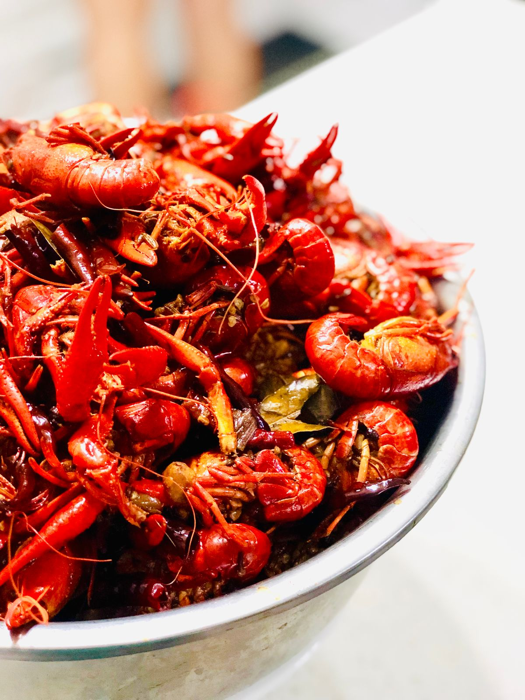
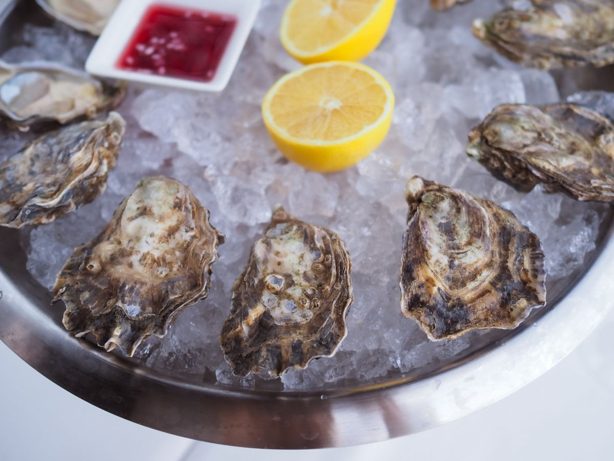

Visit Taranto's Crawfish
Boiled crawfish platters, royal reds, seafood gumbo, and po-boys in Biloxi. Dine-in and carry-out.
Address: 12404 John Lee Rd, Biloxi, MS 39532
Hours: Tuesday to Saturday 11:00 AM to 9:00 PM. Sunday and Monday closed.
Phone: (228) 392-0990
Gallery


All gallery photos are stock photos, labeled as such. They show crawfish and oysters, not this restaurant's food.
Contact
Taranto's Crawfish serves Biloxi, MS. Questions? Call (228) 392-0990.